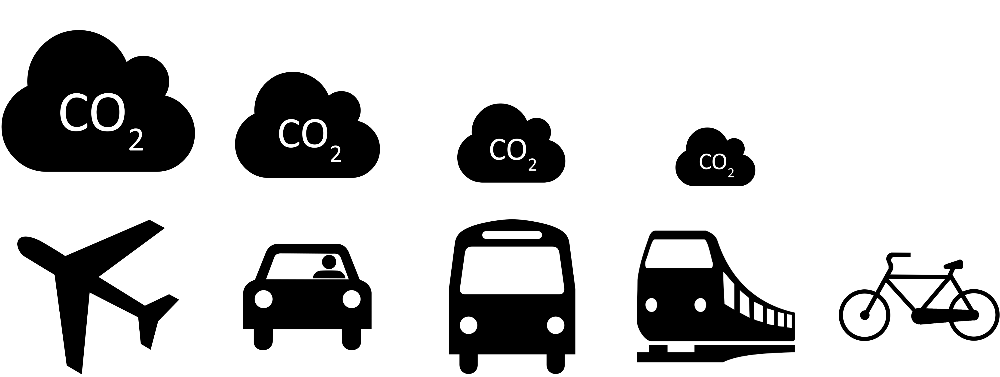

This website's colors are a reflection of the topic being explained in the page.
Everyday, you wake up and make a choice. What do I want to do today? How am I going to get to work/school? And yet it may feel as if every day is the same, repeating over and over again. Though this may be how it feels or seems, but the Earth is constantly changing around us, though we don't feel it.
When you choose to ride a bike or walk to your destination you save the planet from 411 grams per mile. That's a lot when your destination could be 20 or 30 miles away.
I know it may seem like it wouldn't matter or make an impact, becuase there are so many other people driving their cars for their commute, but every little bit helps.
